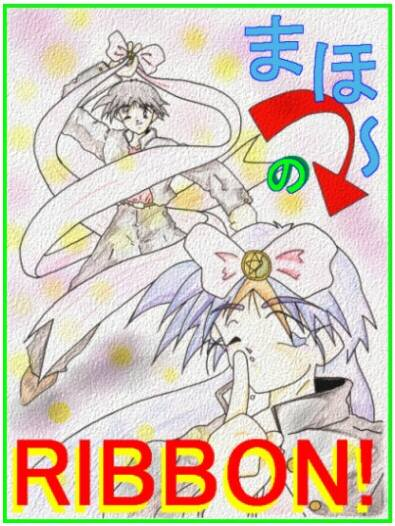

| DEDICATED STORIES | CONTRIBUTER | RECOMMEND |
| 俊夫クン松葉くずしにはまだ早い | 八重洲 | 昔、こういうタイトルの本が角川文庫から出てました… |
| まほーのＲＩＢＢＯＮ | 真城 悠 さん | 真城さんらしいオチのある作品ですね。オチが星新一的だと思うのは私だけでしょうか。 |
| 僕が魔法少女になったわけ | MONDO さん | ある日、突然異世界から妖精が現れて「あなたは選ばれたのよ！」というパターンの魔法少女話です。それだけだったら普通だったんですが、実は選ばれたのは… |
| 縁結び屋・出雲大社のファイル＃２ | ゴールドアーム さん | 待望の縁結び屋シリーズの続編です。やっぱり、縁結び屋という設定は面白いですね。今回は、ハードボイルド魔法少女物語みたいな感じに仕上がっています。密度濃いですね。 |

|
タイトル変更、可です。 |